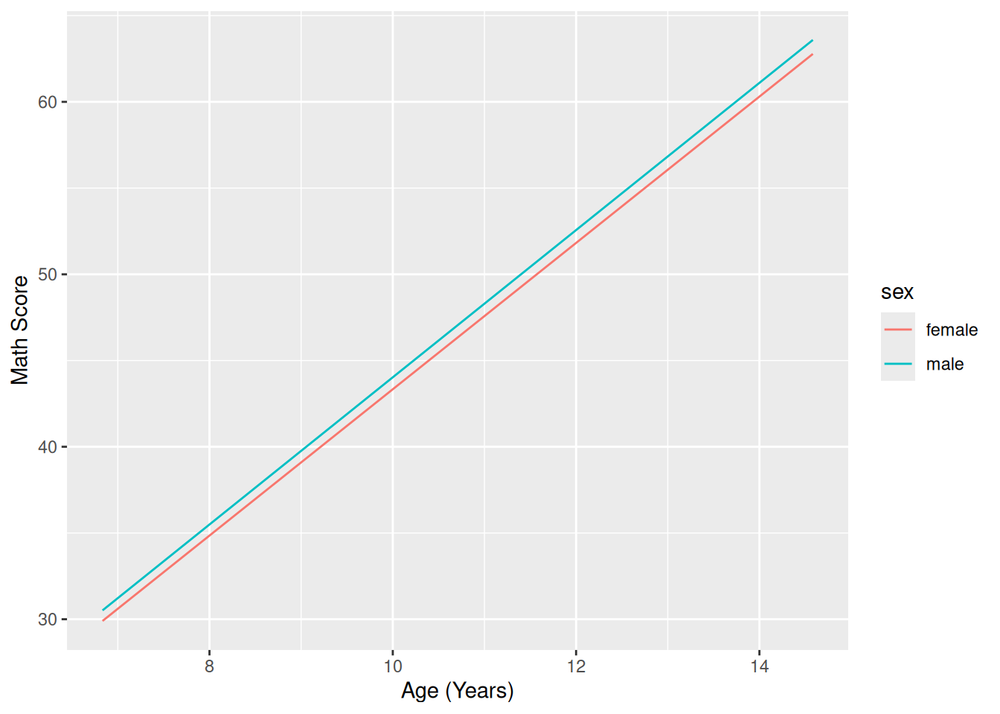
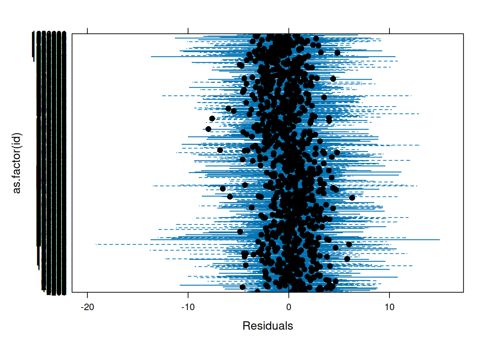
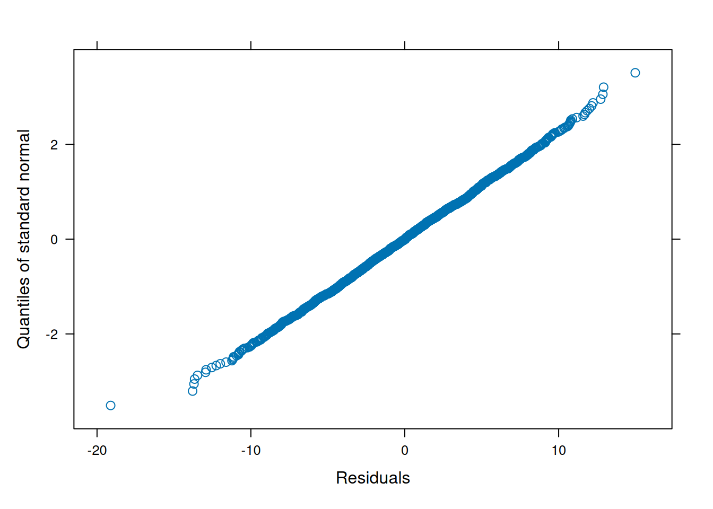

Hierarchical Linear Modeling
1 Preamble
1.1 Install Libraries
#install.packages("remotes")
#remotes::install_github("DevPsyLab/petersenlab")1.2 Load Libraries
library("petersenlab")
library("lme4")
library("nlme")
library("lmerTest")
library("MASS")
library("MCMCglmm")
library("performance")
library("ggplot2")1.3 Import Data
mydata <- read.csv("https://osf.io/cqn3d/download")1.4 Simulate Data
set.seed(52242)
mydata$outcome <- rpois(nrow(mydata), 4)2 Terms
These models go by a variety of different terms:
- hierarchical linear model (HLM)
- multilevel model (MLM)
- mixed effects model
- mixed model
3 Overview
https://isaactpetersen.github.io/Principles-Psychological-Assessment/reliability.html#mixedModels
4 Pre-Model Computation
It can be helpful to center the age/time variable so that the intercept in a growth curve model has meaning. For instance, we can subtract the youngest participant age to set the intercepts to be the earliest age in the sample.
mydata$ageYears <- mydata$age / 12
mydata$ageMonthsCentered <- mydata$age - min(mydata$age, na.rm = TRUE)
mydata$ageYearsCentered <- mydata$ageMonthsCentered / 125 Estimator: ML or REML
For small sample sizes, restricted maximum likelihood (REML) is preferred over maximum likelihood (ML). ML preferred when there is a small number (< 4) of fixed effects; REML is preferred when there are more (> 4) fixed effects. The greater the number of fixed effects, the greater the difference between REML and ML estimates. Likelihood ratio (LR) tests for REML require exactly the same fixed effects specification in both models. So, to compare models with different fixed effects with an LR test (to determine whether to include a particular fixed effect), ML must be used. In contrast to the maximum likelihood estimation, REML can produce unbiased estimates of variance and covariance parameters, variance estimates are larger in REML than ML. To compare whether an effect should be fixed or random, use REML. To simultaneously compare fixed and random effects, use ML.
6 Linear Mixed Models
The following models are models that are fit in a linear mixed modeling framework.
6.1 Growth Curve Models
6.1.1 Plot Observed Growth Curves
ggplot(
data = mydata,
mapping = aes(
x = ageYears,
y = math,
group = id)) +
geom_line() +
scale_x_continuous(
name = "Age (Years)") +
scale_y_continuous(
name = "Math Score")
6.1.2
lme4
linearMixedModel <- lmer(
math ~ female + ageYearsCentered + (ageYearsCentered | id),
data = mydata,
REML = FALSE, #for ML
na.action = na.exclude,
control = lmerControl(optimizer = "bobyqa"))
summary(linearMixedModel)Linear mixed model fit by maximum likelihood . t-tests use Satterthwaite's
method [lmerModLmerTest]
Formula: math ~ female + ageYearsCentered + (ageYearsCentered | id)
Data: mydata
Control: lmerControl(optimizer = "bobyqa")
AIC BIC logLik deviance df.resid
15855.9 15895.8 -7920.9 15841.9 2214
Scaled residuals:
Min 1Q Median 3Q Max
-3.3709 -0.5156 0.0054 0.5228 2.6412
Random effects:
Groups Name Variance Std.Dev. Corr
id (Intercept) 62.5362 7.9080
ageYearsCentered 0.6764 0.8225 0.08
Residual 32.1542 5.6705
Number of obs: 2221, groups: id, 932
Fixed effects:
Estimate Std. Error df t value Pr(>|t|)
(Intercept) 30.55370 0.50310 1007.55144 60.731 <2e-16 ***
female -0.69259 0.61681 921.20501 -1.123 0.262
ageYearsCentered 4.25538 0.08044 599.23078 52.899 <2e-16 ***
---
Signif. codes: 0 '***' 0.001 '**' 0.01 '*' 0.05 '.' 0.1 ' ' 1
Correlation of Fixed Effects:
(Intr) female
female -0.613
ageYrsCntrd -0.506 0.0136.1.2.1 Protoypical Growth Curve
newData <- expand.grid(
female = c(0, 1),
ageYears = c(
min(mydata$ageYears, na.rm = TRUE),
max(mydata$ageYears, na.rm = TRUE))
)
newData$ageYearsCentered <- newData$ageYears - min(newData$ageYears)
newData$sex <- NA
newData$sex[which(newData$female == 0)] <- "male"
newData$sex[which(newData$female == 1)] <- "female"
newData$sex <- as.factor(newData$sex)
newData$predictedValue <- predict(
linearMixedModel,
newdata = newData,
re.form = NA
)
ggplot(
data = newData,
mapping = aes(x = ageYears, y = predictedValue, color = sex)) +
xlab("Age (Years)") +
ylab("Math Score") +
geom_line()
6.1.2.2 Individuals’ Growth Curves
mydata$predictedValue <- predict(
linearMixedModel,
newdata = mydata,
re.form = NULL
)
ggplot(
data = mydata,
mapping = aes(x = ageYears, y = predictedValue, group = factor(id))) +
xlab("Age (Years)") +
ylab("Math Score") +
geom_line()
6.1.2.3 Individuals’ Trajectories Overlaid with Prototypical Trajectory
ggplot(
data = mydata,
mapping = aes(x = ageYears, y = predictedValue, group = factor(id))) +
xlab("Age (Years)") +
ylab("Math Score") +
geom_line() +
geom_line(
data = newData,
mapping = aes(x = ageYears, y = predictedValue, group = sex, color = sex),
linewidth = 2)
6.1.3
nlme
linearMixedModel_nlme <- lme(
math ~ female + ageYearsCentered,
random = ~ 1 + ageYearsCentered|id,
data = mydata,
method = "ML",
na.action = na.exclude)
summary(linearMixedModel_nlme)Linear mixed-effects model fit by maximum likelihood
Data: mydata
AIC BIC logLik
15855.88 15895.82 -7920.938
Random effects:
Formula: ~1 + ageYearsCentered | id
Structure: General positive-definite, Log-Cholesky parametrization
StdDev Corr
(Intercept) 7.9079823 (Intr)
ageYearsCentered 0.8224646 0.082
Residual 5.6704658
Fixed effects: math ~ female + ageYearsCentered
Value Std.Error DF t-value p-value
(Intercept) 30.553704 0.5034410 1288 60.68975 0.0000
female -0.692589 0.6172311 930 -1.12209 0.2621
ageYearsCentered 4.255383 0.0804975 1288 52.86352 0.0000
Correlation:
(Intr) female
female -0.613
ageYearsCentered -0.506 0.013
Standardized Within-Group Residuals:
Min Q1 Med Q3 Max
-3.370893315 -0.515648734 0.005400783 0.522827415 2.641194668
Number of Observations: 2221
Number of Groups: 932 6.2 Intraclass Correlation Coefficent
icc(linearMixedModel)icc(linearMixedModel_nlme)7 Generalized Linear Mixed Models
https://bbolker.github.io/mixedmodels-misc/glmmFAQ.html (archived at https://perma.cc/9RFS-BCE7; source code: https://github.com/bbolker/mixedmodels-misc/blob/master/glmmFAQ.rmd)
7.1
lmer
generalizedLinearMixedModel <- glmer(
outcome ~ female + ageYearsCentered + (ageYearsCentered | id),
family = poisson(link = "log"),
data = mydata,
na.action = na.exclude)boundary (singular) fit: see help('isSingular')summary(generalizedLinearMixedModel)Generalized linear mixed model fit by maximum likelihood (Laplace
Approximation) [glmerMod]
Family: poisson ( log )
Formula: outcome ~ female + ageYearsCentered + (ageYearsCentered | id)
Data: mydata
AIC BIC logLik deviance df.resid
9329.7 9363.9 -4658.8 9317.7 2215
Scaled residuals:
Min 1Q Median 3Q Max
-2.0331 -0.5546 -0.0205 0.5350 5.0222
Random effects:
Groups Name Variance Std.Dev. Corr
id (Intercept) 0.0058309 0.07636
ageYearsCentered 0.0002845 0.01687 -1.00
Number of obs: 2221, groups: id, 932
Fixed effects:
Estimate Std. Error z value Pr(>|z|)
(Intercept) 1.343986 0.027432 48.994 <2e-16 ***
female 0.007439 0.021264 0.350 0.7265
ageYearsCentered 0.010279 0.005877 1.749 0.0803 .
---
Signif. codes: 0 '***' 0.001 '**' 0.01 '*' 0.05 '.' 0.1 ' ' 1
Correlation of Fixed Effects:
(Intr) female
female -0.414
ageYrsCntrd -0.835 0.037
optimizer (Nelder_Mead) convergence code: 0 (OK)
boundary (singular) fit: see help('isSingular')7.2
MASS
glmmPQLmodel <- glmmPQL(
outcome ~ female + ageYearsCentered,
random = ~ 1 + ageYearsCentered|id,
family = poisson(link = "log"),
data = mydata)iteration 1summary(glmmPQLmodel)Linear mixed-effects model fit by maximum likelihood
Data: mydata
AIC BIC logLik
NA NA NA
Random effects:
Formula: ~1 + ageYearsCentered | id
Structure: General positive-definite, Log-Cholesky parametrization
StdDev Corr
(Intercept) 5.533290e-05 (Intr)
ageYearsCentered 9.320922e-08 0
Residual 1.014184e+00
Variance function:
Structure: fixed weights
Formula: ~invwt
Fixed effects: outcome ~ female + ageYearsCentered
Value Std.Error DF t-value p-value
(Intercept) 1.3453017 0.027100741 1288 49.64077 0.0000
female 0.0074130 0.021543030 930 0.34410 0.7308
ageYearsCentered 0.0100806 0.005850753 1288 1.72296 0.0851
Correlation:
(Intr) female
female -0.423
ageYearsCentered -0.829 0.036
Standardized Within-Group Residuals:
Min Q1 Med Q3 Max
-2.00970268 -0.55110605 -0.02158036 0.53179575 4.98914420
Number of Observations: 2221
Number of Groups: 932 7.3
MCMCglmm
MCMCglmmModel <- MCMCglmm(
outcome ~ female + ageYearsCentered,
random = ~ us(ageYearsCentered):id,
family = "poisson",
data = na.omit(mydata[,c("id","outcome","female","ageYearsCentered")]))
MCMC iteration = 0
Acceptance ratio for liability set 1 = 0.000410
MCMC iteration = 1000
Acceptance ratio for liability set 1 = 0.439819
MCMC iteration = 2000
Acceptance ratio for liability set 1 = 0.439977
MCMC iteration = 3000
Acceptance ratio for liability set 1 = 0.444608
MCMC iteration = 4000
Acceptance ratio for liability set 1 = 0.496749
MCMC iteration = 5000
Acceptance ratio for liability set 1 = 0.490778
MCMC iteration = 6000
Acceptance ratio for liability set 1 = 0.512362
MCMC iteration = 7000
Acceptance ratio for liability set 1 = 0.428231
MCMC iteration = 8000
Acceptance ratio for liability set 1 = 0.412336
MCMC iteration = 9000
Acceptance ratio for liability set 1 = 0.471726
MCMC iteration = 10000
Acceptance ratio for liability set 1 = 0.428491
MCMC iteration = 11000
Acceptance ratio for liability set 1 = 0.400078
MCMC iteration = 12000
Acceptance ratio for liability set 1 = 0.346435
MCMC iteration = 13000
Acceptance ratio for liability set 1 = 0.276170summary(MCMCglmmModel)
Iterations = 3001:12991
Thinning interval = 10
Sample size = 1000
DIC: 9323.524
G-structure: ~us(ageYearsCentered):id
post.mean l-95% CI u-95% CI eff.samp
ageYearsCentered:ageYearsCentered.id 6.754e-06 1.087e-08 4.053e-05 7.788
R-structure: ~units
post.mean l-95% CI u-95% CI eff.samp
units 0.00877 0.001634 0.01728 7.797
Location effects: outcome ~ female + ageYearsCentered
post.mean l-95% CI u-95% CI eff.samp pMCMC
(Intercept) 1.338707 1.281096 1.387614 55.58 <0.001 ***
female 0.007688 -0.031193 0.052271 58.65 0.706
ageYearsCentered 0.010561 0.000813 0.021420 57.32 0.046 *
---
Signif. codes: 0 '***' 0.001 '**' 0.01 '*' 0.05 '.' 0.1 ' ' 18 Nonlinear Mixed Models
nonlinearModel <- nlme(
height ~ SSasymp(age, Asym, R0, lrc),
data = Loblolly,
fixed = Asym + R0 + lrc ~ 1,
random = Asym ~ 1)
summary(nonlinearModel)Nonlinear mixed-effects model fit by maximum likelihood
Model: height ~ SSasymp(age, Asym, R0, lrc)
Data: Loblolly
AIC BIC logLik
239.486 251.6401 -114.743
Random effects:
Formula: Asym ~ 1 | Seed
Asym Residual
StdDev: 3.650645 0.7188624
Fixed effects: list(Asym ~ 1, R0 ~ 1, lrc ~ 1)
Value Std.Error DF t-value p-value
Asym 101.44830 2.4616151 68 41.21209 0
R0 -8.62749 0.3179519 68 -27.13459 0
lrc -3.23373 0.0342695 68 -94.36168 0
Correlation:
Asym R0
R0 0.704
lrc -0.908 -0.827
Standardized Within-Group Residuals:
Min Q1 Med Q3 Max
-2.23604174 -0.62389999 0.05912777 0.65724316 1.95790785
Number of Observations: 84
Number of Groups: 14 9 Robust Mixed Models
To evaluate the extent to which a finding could driven by outliers, this could be done in a number of different ways, such as:
- identifying and excluding influential observations based on DFBETAS or Cook’s distance (Nieuwenhuis, Grotenhuis, & Pelzer, 2012)
- fitting mixed models using rank-based estimation (Bilgic & Susmann, 2013; Finch, 2017) or robust estimating equations (Koller, 2016)
- estimating robust standard errors using a sandwich estimator (Wang & Merkle, 2018)
10 Assumptions
The within-group errors:
- are independent
- are identically normally distributed
- have mean zero and variance sigma-squared
- are independent of the random effects
The random effects:
- are normally distributed
- have mean zero and covariance matrix Psi (not depending on the group)
- are independent for different groups
11 Examining Model Assumptions
11.1 Resources
Pinheiro and Bates (2000) book (p. 174, section 4.3.1)
https://stats.stackexchange.com/questions/77891/checking-assumptions-lmer-lme-mixed-models-in-r (archived at https://perma.cc/J5GC-PCUT)
11.2 QQ Plots
Make QQ plots for each level of the random effects. Vary the level from 0, 1, to 2 so that you can check the between- and within-subject residuals.
qqnorm(linearMixedModel_nlme,
~ ranef(., level = 1))
11.3 PP Plots
ppPlot(linearMixedModel)
11.4 QQ Plot of residuals
qqnorm(resid(linearMixedModel))
qqline(resid(linearMixedModel))
11.5 Plot residuals
plot(linearMixedModel)11.6 Plot residuals by group (in the example below, level 2 represents the individual)
plot(linearMixedModel,
as.factor(id) ~ resid(.),
abline = 0,
xlab = "Residuals")
11.7 Plot residuals by levels of a predictor
plot(linearMixedModel_nlme,
resid(., type = "p") ~ fitted(.) | female) #type = "p" specifies standardized residuals
11.8 Can model heteroscedasticity of the within-group error with the weights argument
linearMixedModel_nlmeVarStructure <- lme(
math ~ female + ageYearsCentered,
random = ~ 1 + ageYearsCentered|id,
weights = varIdent(form = ~ 1 | female),
method = "ML",
data = mydata,
na.action = na.exclude)
summary(linearMixedModel_nlmeVarStructure)Linear mixed-effects model fit by maximum likelihood
Data: mydata
AIC BIC logLik
15857.83 15903.48 -7920.915
Random effects:
Formula: ~1 + ageYearsCentered | id
Structure: General positive-definite, Log-Cholesky parametrization
StdDev Corr
(Intercept) 7.9177716 (Intr)
ageYearsCentered 0.8278343 0.076
Residual 5.6410162
Variance function:
Structure: Different standard deviations per stratum
Formula: ~1 | female
Parameter estimates:
1 0
1.000000 1.009161
Fixed effects: math ~ female + ageYearsCentered
Value Std.Error DF t-value p-value
(Intercept) 30.554856 0.5040373 1288 60.62022 0.0000
female -0.692653 0.6172485 930 -1.12216 0.2621
ageYearsCentered 4.255258 0.0805531 1288 52.82553 0.0000
Correlation:
(Intr) female
female -0.614
ageYearsCentered -0.507 0.014
Standardized Within-Group Residuals:
Min Q1 Med Q3 Max
-3.37982974 -0.51663213 0.00445497 0.52228733 2.63205084
Number of Observations: 2221
Number of Groups: 932 11.9 Plot observed and fitted values
plot(linearMixedModel,
math ~ fitted(.))11.10 Plot QQ plot of residuals by levels of a predictor
qqnorm(linearMixedModel_nlme, ~ resid(.) | female)qqnorm(linearMixedModel_nlme, ~ resid(.))
11.11 QQ plot of random effects
Make QQ plots for each level of the random effects. Vary the level from 0, 1, to 2 so that you can check the between- and within-subject residuals.
qqnorm(linearMixedModel_nlme,
~ ranef(., level = 0))Error in effects[[1L]]: subscript out of boundsqqnorm(linearMixedModel_nlme,
~ ranef(., level = 1))
qqnorm(linearMixedModel_nlme,
~ ranef(., level = 2))Error in eval(i, data, env): object '.y' not found11.12 QQ plot of random effects by levels of a predictor
qqnorm(linearMixedModel_nlme,
~ ranef(., level = 1) | female)
11.13 Pairs plot
pairs(linearMixedModel_nlme)pairs(linearMixedModel_nlme,
~ ranef(., level = 1) | female)11.14 Variance functions for modeling heteroscedasticity
varFixed: fixed variancevarIdent: different variances per stratumvarPower: power of covariatevarExp: exponential of covariatevarConstPower: constant plus power of covariatevarComb: combination of variance functions
11.15 Correlation structures for modeling dependence
corCompSymm: compound symmetrycorSymm: generalcorAR1: autoregressive of order 1corCAR1: continuous-time AR(1)corARMA: autoregressive-moving averagecorExp: exponentialcorGaus: GaussiancorLin: linearcorRatio: rational quadraticcorSpher: spherical
12 Session Info
sessionInfo()R version 4.4.0 (2024-04-24)
Platform: x86_64-pc-linux-gnu
Running under: Ubuntu 22.04.4 LTS
Matrix products: default
BLAS: /usr/lib/x86_64-linux-gnu/openblas-pthread/libblas.so.3
LAPACK: /usr/lib/x86_64-linux-gnu/openblas-pthread/libopenblasp-r0.3.20.so; LAPACK version 3.10.0
locale:
[1] LC_CTYPE=C.UTF-8 LC_NUMERIC=C LC_TIME=C.UTF-8
[4] LC_COLLATE=C.UTF-8 LC_MONETARY=C.UTF-8 LC_MESSAGES=C.UTF-8
[7] LC_PAPER=C.UTF-8 LC_NAME=C LC_ADDRESS=C
[10] LC_TELEPHONE=C LC_MEASUREMENT=C.UTF-8 LC_IDENTIFICATION=C
time zone: UTC
tzcode source: system (glibc)
attached base packages:
[1] stats graphics grDevices utils datasets methods base
other attached packages:
[1] ggplot2_3.5.1 performance_0.11.0 MCMCglmm_2.36 ape_5.8
[5] coda_0.19-4.1 MASS_7.3-60.2 lmerTest_3.1-3 nlme_3.1-164
[9] lme4_1.1-35.3 Matrix_1.7-0 petersenlab_1.0.0
loaded via a namespace (and not attached):
[1] tidyselect_1.2.1 psych_2.4.3 viridisLite_0.4.2
[4] farver_2.1.2 dplyr_1.1.4 fastmap_1.2.0
[7] tensorA_0.36.2.1 digest_0.6.35 rpart_4.1.23
[10] lifecycle_1.0.4 cluster_2.1.6 magrittr_2.0.3
[13] compiler_4.4.0 rlang_1.1.3 Hmisc_5.1-2
[16] sass_0.4.9 tools_4.4.0 utf8_1.2.4
[19] yaml_2.3.8 data.table_1.15.4 knitr_1.46
[22] labeling_0.4.3 htmlwidgets_1.6.4 mnormt_2.1.1
[25] plyr_1.8.9 RColorBrewer_1.1-3 withr_3.0.0
[28] foreign_0.8-86 numDeriv_2016.8-1.1 nnet_7.3-19
[31] grid_4.4.0 stats4_4.4.0 fansi_1.0.6
[34] lavaan_0.6-17 xtable_1.8-4 colorspace_2.1-0
[37] scales_1.3.0 insight_0.19.11 cli_3.6.2
[40] mvtnorm_1.2-4 rmarkdown_2.27 generics_0.1.3
[43] rstudioapi_0.16.0 reshape2_1.4.4 minqa_1.2.6
[46] DBI_1.2.2 cachem_1.1.0 stringr_1.5.1
[49] splines_4.4.0 parallel_4.4.0 base64enc_0.1-3
[52] mitools_2.4 vctrs_0.6.5 boot_1.3-30
[55] jsonlite_1.8.8 Formula_1.2-5 htmlTable_2.4.2
[58] jquerylib_0.1.4 glue_1.7.0 nloptr_2.0.3
[61] stringi_1.8.4 cubature_2.1.0 gtable_0.3.5
[64] quadprog_1.5-8 munsell_0.5.1 tibble_3.2.1
[67] pillar_1.9.0 htmltools_0.5.8.1 R6_2.5.1
[70] mix_1.0-12 evaluate_0.23 pbivnorm_0.6.0
[73] lattice_0.22-6 highr_0.10 backports_1.4.1
[76] corpcor_1.6.10 bslib_0.7.0 Rcpp_1.0.12
[79] gridExtra_2.3 checkmate_2.3.1 xfun_0.44
[82] pkgconfig_2.0.3